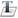

ToolbarS
Toolbars can be turned off using the network view menu.
Mode Toolbar
This toolbar allows you to set the edit mode for the network, visible as the cursor graphic.
| Selection mode. Select nodes and weights by lassoing or left-clicking. Hotkey: S. | |
|  | Text mode. In this mode text can be added anywhere in the network panel. Text objects can be subsequently edited by double-clicking on them. Text can be formatted by right clicking on a text object and selectingText Properties.... Hotkey: T. |

|
Wand mode. Can be used to inject activation to nodes quickly for testing. Hotkey: I. See wand tool. |

|
Zoom to fit objects on screen. Resets the zoom of the canvas so all network objects fit on screen. Key command: "F". |
Run Toolbar
This toolbar is for running the network, independently of the workspace. It is hidden by default (because it can be easily confused with workspace run / step) and must be turned on using the view menu.

|
Run network . Repeatedly iterates the network. Note that the image on the button becomes that of a "stop" button  . Pressing this button will stop the network. Thus the play/stop button acts as a toggle switch. . Pressing this button will stop the network. Thus the play/stop button acts as a toggle switch. |

|
Step through one update cycle (Also keyboard space and S, depending on interaction mode). |
Edit Toolbar
This toolbar allows you to create and delete neurons, and change their state.

|
Set all selected nodes (weights and or nodes) to a random value (Also keyboard R). Randomization is a uniform distribution between the upper and lower bounds set for each neuron or weights. |

|
Set all selected neurons to 0. Weights are ignored. (Also keyboard C) |

|
Create a neuron at last position clicked on screen. (Also keyboard N) |

|
Delete currently selected neurons. (Also keyboard delete or backspace). |